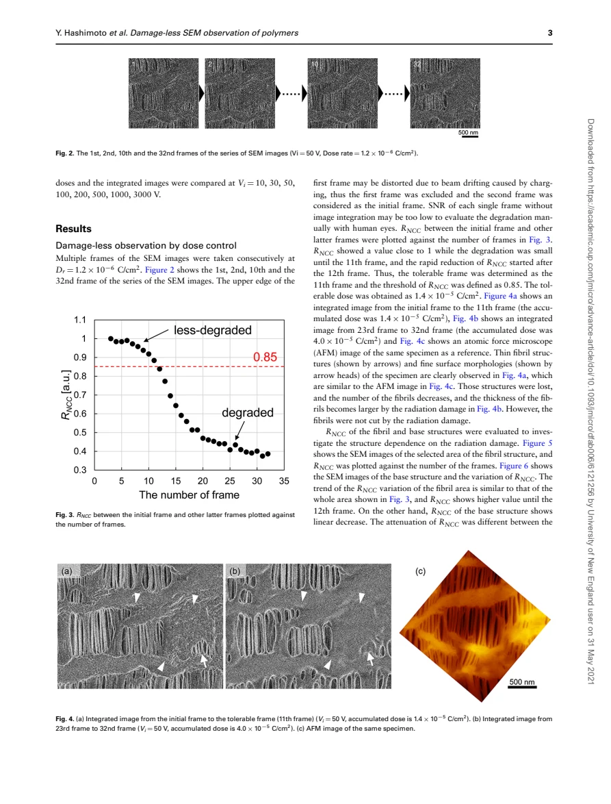
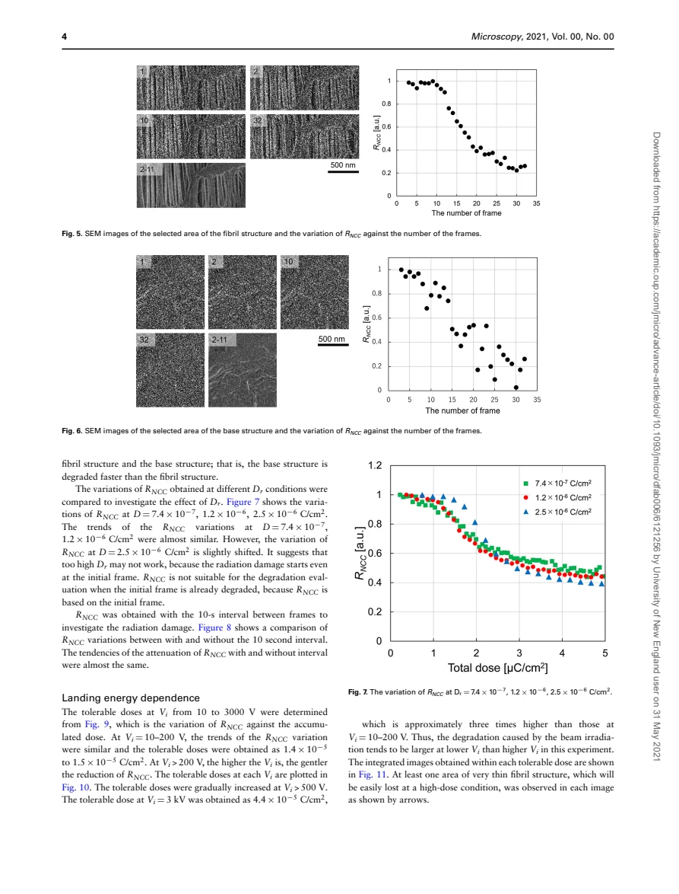
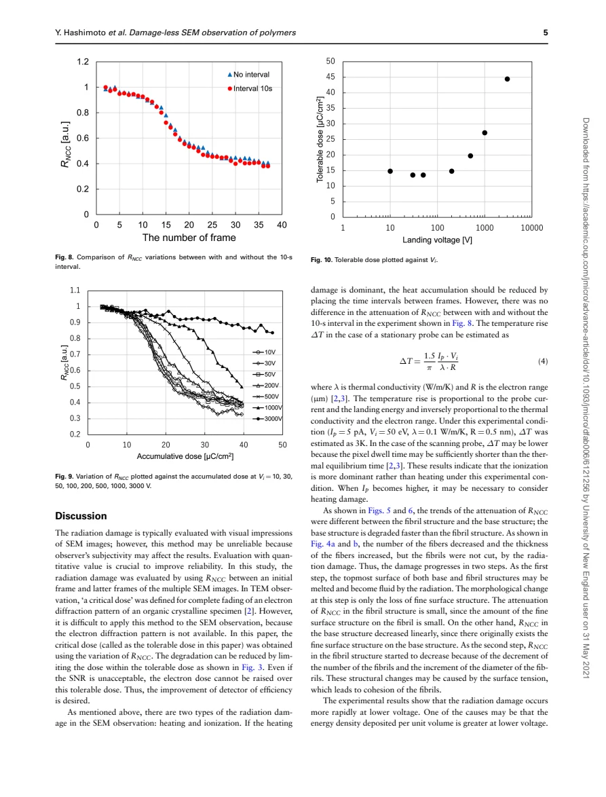
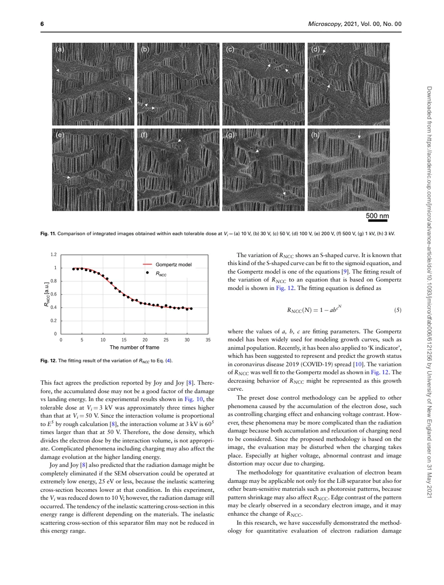

Hashimoto · supplied source 2021 · experiment / method
Damage-less observation of polymers by electron dose control in scanning electron microscope
Image quality and sample preservation must be optimized together: integrate early frames within a specimen-specific morphology tolerance.
The question: Can consecutive low-dose SEM frames reveal when a beam-sensitive separator starts changing, then yield a clearer image within that tolerance?
Before you start: the terms you need
- SEM: electron scanning produces a surface-sensitive image.
- Landing energy: the primary electron energy at the specimen.
- RNCC: normalized similarity of two images after subtracting their mean gray levels.
- Dose per frame: probe current × dwell time / pixel area, here in C/cm².
See → explain → check
Follow the idea in 4 pictures.
Picture 1 / 4
An image is also an exposure
Look for: Successive electron exposures can change the object being measured.
Swipe across the picture to read every label, or enlarge it below.
- Early reference
- Later modified morphology
Teaching separator pattern, not an original or simulated SEM micrograph.
The best-looking late image may depict a modified separator.
Picture 2 / 4
Keep a cumulative budget
Look for: Dose per frame multiplied by frame count sets cumulative exposure.
Swipe across the picture to read every label, or enlarge it below.
- Current × dwell / area
- Cumulative frame count
- Tolerable exposure
The paper calls charge per area per frame a dose rate; it is not an absorbed kGy dose.
A discarded frame still exposed the specimen, even if it is omitted from image integration.
Picture 3 / 4
Compare before averaging
Look for: Similarity to the reference exposes morphological changes.
Swipe across the picture to read every label, or enlarge it below.
- Reference frame
- Frame similarity
- Early-frame integration
Correlation can also change through drift, charging, contrast or noise.
The reported 0.85 threshold is an operational choice for this dataset, not a universal damage boundary.
Picture 4 / 4
Lower energy still needs dose control
Look for: Surface sensitivity and tolerated charge density vary differently.
Swipe across the picture to read every label, or enlarge it below.
- 10–200 V
- 3 kV
Reported comparison: about 1.4–1.5×10⁻⁵ versus 4.4×10⁻⁵ C/cm² tolerable dose. This is not a generic polymer law.
A smaller landing energy did not eliminate damage in this separator experiment.
Predict before revealing
You discard a distorted first frame before averaging. What happens to the exposure it delivered?
Choose an answer, then compare the reasoning.
Image processing selects recorded information. It cannot reverse physical exposure already delivered to the specimen.
Read the answer
It remains in accumulated exposure, although excluded from image integration. Image processing selects recorded information. It cannot reverse physical exposure already delivered to the specimen.
Go deeper Follow the full argument
The scientific problem starts before analysis
A battery separator has pores and fine fibrils that matter for electrolyte transport and isolation. Electron imaging can modify those same structures, making a sharper image a misleading description of the original object. Simply judging damage by eye is unreliable when each frame is noisy. Hashimoto and collaborators propose acquiring consecutive low-dose elemental frames, comparing their morphology quantitatively, and integrating only the early subset that remains within an operational tolerance. The word damage-less in the title is thus read through the method’s measured morphological sensitivity. It is not a proof that no ionization, broken bond or unobserved subsurface change has occurred.
Dose arithmetic and the reference frame
The dose quantity is charge divided by area: Dᵣ = Iₚt/S per frame, followed by D = NDᵣ. The source uses the name dose rate for Dᵣ, although the equation represents the exposure per frame under the stated scan conditions. Reducing current or dwell time, or enlarging the pixel area, lowers that exposure. In the reported 50 V series, the first frame was distorted by charging-related drift and the second became the comparison reference. Excluding frame 1 from an average does not undo its delivered dose. Distinguish the chronological cumulative frame count from the number of frames actually integrated into the final image.
What normalized correlation measures
RNCC compares the mean-subtracted gray-level patterns of the reference and a later frame and normalizes by their fluctuation magnitudes. Similar patterns give a value near one; contrast inversion gives minus one. The authors additionally normalize the maximum in their experiment. A decline is therefore evidence that the recorded image changed, with a morphology interpretation only after considering drift, charging, noise and contrast. A first reference that is already damaged makes this test weak: later frames may remain highly correlated with an altered structure. The paper observes this risk at the largest exposure per elemental frame. The reference condition must be checked before accepting a tolerance estimate.
Read the threshold and the integrated images together
At 50 V and a nominal per-frame exposure of 1.2×10⁻⁶ C/cm², the similarity remains high through roughly frame 11 and begins its rapid fall after frame 12. The authors use RNCC = 0.85 to identify the tolerable frame and report about 1.4×10⁻⁵ C/cm². They compare an early integrated SEM image with a later image and an AFM reference. Thin fibrils and fine surface texture are retained better in the early integration. Later frames show fewer, thicker fibrils and lost fine texture. Image averaging improves the random-noise component of SNR, but including frames after the morphology changes trades statistical clarity for an altered object.
Damage depends on the selected structure and scan conditions
Separate regions do not have identical similarity trajectories. The base region loses fine surface detail steadily, while the fibril region has a more delayed decline associated with changes in fibril number and thickness. A whole-image correlation can therefore hide the earliest change in a scientifically important region. The authors compare several per-frame exposure conditions and also add ten-second intervals. The similar decline with and without those intervals, together with their small estimated temperature rise at 5 pA and 50 V, supports ionization as the dominant mechanism under those conditions. It does not rule out heating at larger currents or for other specimens.
Landing energy changes the tradeoff
The study compares 10, 30, 50, 100, 200, 500, 1000 and 3000 V. The reported tolerable charge density is about 1.4–1.5×10⁻⁵ C/cm² at 10–200 V and rises to 4.4×10⁻⁵ C/cm² at 3 kV. This challenges the simple assumption that reducing landing energy always prevents damage. Energy deposited per volume, sampling depth and charging all matter, and the authors do not find that their crude interaction-volume normalization explains the energy trend. They still observe damage at 10 V. Higher tolerable charge does not automatically mean a better image of the topmost surface, because resolution and interaction volume also change.
Use the method as a reasoning framework
The practical sequence is to choose the feature of interest, obtain a minimally altered reference, track frame similarity in the relevant region, select a justified tolerance and integrate early frames within it. If the allowable frames remain too noisy, the paper recommends better detector efficiency rather than exceeding the tolerance. It also discusses empirical Gompertz fitting of the similarity decline; a good growth-function fit is not a molecular damage mechanism. Applying the method to another polymer or specimen needs a new baseline and threshold. The companion composite paper intentionally uses irradiation to alter mechanical behavior; here the objective is to detect and limit alteration while making a measurement.
Translate the mathematics Essential equations and their meaning
Dᵣ = Iₚt / S; D = NDᵣ
Symbols: Iₚ: probe current; t: pixel dwell time; S: pixel area; N: cumulative frame count.
Current in amperes times time in seconds gives coulombs. Divide by consistently expressed area. Earlier discarded frames still contribute to cumulative dose.
RNCC = Σ(f−f̄)(T−T̄) / √[Σ(f−f̄)² Σ(T−T̄)²]
Symbols: f and T: pixel intensities in the reference and evaluated image; overbars: their mean intensities; sum over matching pixels.
A mean-subtracted normalized similarity metric. Changes need interpretation; similarity is not a direct chemical damage fraction.
RNCC(N) = 1 − a b^(c^N)
Symbols: a, b, c: empirical fitting parameters; N: frame number.
Nested exponentiation is verified from the original Eq. 5. This is the paper’s empirical Gompertz form, not an inversion for a chemical reaction rate.
Read the evidence Guided original source pages

PDF p. 3

PDF p. 4

PDF p. 5

PDF p. 6
What the evidence supports—and where it stops
- Morphological similarity is an operational test, not proof of zero bond damage.
- The initial frame, charging, registration, noise and selected region can bias correlation.
- Voltage and tolerable-dose results describe this separator and scan conditions.
- The guide does not turn the article into an unverified instrument operating procedure.
Explain it back.
Try answering aloud before opening the explanation.
Does RNCC near one prove no chemical damage?
No. It means image patterns remain similar within the metric’s sensitivity. The reference may already be altered, and chemical or subsurface changes need not be resolved.
Why not average every frame for better SNR?
Later frames can show changed morphology. The noise benefit of averaging does not restore the original structure.
Is 0.85 a universal tolerance?
No. It is the chosen threshold associated with rapid correlation loss in this separator dataset. Other structures and imaging conditions require their own evidence.
Why distinguish C/cm² and kGy?
C/cm² measures incident charge per area; kGy measures absorbed energy per mass. A conversion needs electron energy, geometry and energy absorption, and is not given by merely relabeling the axis.
Connect another source.
Source version, reading coverage and preservation
All seven pages of extracted body text read; original dose/correlation definitions, threshold plots, micrographs and nested-exponent equation visually checked.
Reviewed body pages: 1, 2, 3, 4, 5, 6, 7. References inspected for structure; cited works not independently reviewed.
Source SHA-256: 6b025626c8a6cff747416813ebac94fbcf2e1e73abed5a8308e4c2083dd16c67. Original file bytes preserved locally, and in this room’s original download.
Microscopy - Hashimoto - Damage-less SEM observation of polymers - 2021.pdf